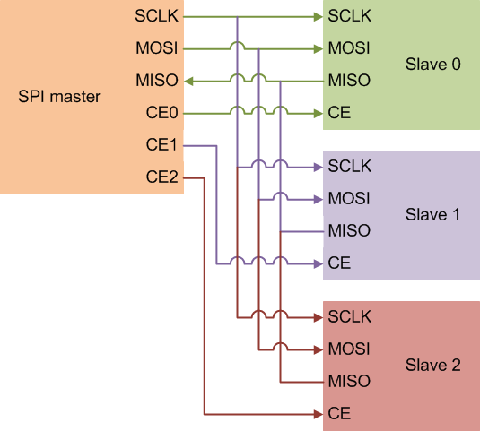
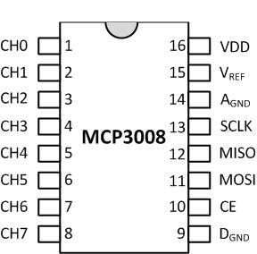
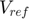
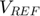

Analog Input Using SPI
This example shows you how to use the SPI peripheral on Raspberry Pi® hardware to connect to an MCP3008 10-bit 8-channel ADC.
Contents
Introduction
A wide variety of sensors output analog voltage levels in response to environmental stimulus. Examples of analog sensors are TMP36 temperature sensor, and photo resistors. Raspberry Pi hardware does not have any built-in analog input ports. Too use analog sensors, you need an external ADC. In this example, you interface an ADC chip to Raspberry Pi hardware using the SPI peripheral.
Prerequisites
- It is helpful if you complete the Getting Started with MATLAB Support Package for Raspberry Pi Hardware example.
Required Hardware
To run this example you need the following hardware:
- Raspberry Pi hardware
- A power supply with at least 1A output
- Breadboard and jumper cables
- MCP3008 ADC
- 10 kOhm Potentiometer
Overview of SPI
The Serial Peripheral Interface (SPI) is a synchronous serial data link that you use to interface one or more slave peripheral devices to a single master SPI device. SPI uses three signal lines common to all slave peripherals:
- Master in slave out (MISO). Data is moved from slave to master on this wire.
- Master out slave in (MOSI). Data is moved from master to slave on this wire.
- Serial clock (SCLK). The master SPI device generates this clock.
Each slave peripheral is wired to an individual chip-select or slave-transmit enable line. During SPI communication, the master selects only one slave device at a time. Any other slave on the bus that has not been activated using its chip-select line must disregard the input clock and MOSI signals. It also must not drive the MISO line.

SPI communications are full duplex. When the master sends a bit on the MOSI line, the slave reads the bit and at the same time sends a bit on the MISO line that is in turn read by the master. Therefore, to read from a slave device, you must write to it.
There are four different SPI modes you can use. Each mode defines a particular clock phase (CPHA) and polarity (CPOL) with respect to the data. Mode 0 (CPOL = 0, CPHA = 0) is the most common use case. The Raspberry Pi hardware has two SPI channels on the board: 0 and 1. It can support up to two SPI slave devices. Each SPI channel has a corresponding bus speed that can range from 500 KHz to 32 MHz. The number of data bits that are exchanged in each SPI transaction can vary between 8 to 16 bits with 8-bits being the most common.
View available SPI channels
Create a raspi object and inspect the AvailableSPIChannels property of the raspi object.
clear rpi
rpi = raspi();
rpi.AvailableSPIChannels
If the SPI peripheral is not enabled, you will see an empty cell array. To enable the SPI peripheral use the raspi-config utility that comes with the Raspbian Linux image. AvailableSPIChannels property of the rpi object should yield 'CE0' and 'CE1' SPI channels listed as available.
Overview of MCP3008
MCP3008 is a 10-bit, 8-channel analog to digital converter (ADC) with an SPI interface.

As seen in this diagram, pins 1 through 8 are analog input channels. Pin 16 is the digital supply voltage and pin 9 is the digital ground.  and are the pins used for reference voltage level for analog measurements. The digital 10-bit voltage measurement value is scaled so that a value of 0 corresponds to and a value of 1023 (2^10 - 1) corresponding to . Pins 10 through 13 are connections for SPI interface.
Connect MCP3008
Connect MCP3008 to the Raspberry Pi hardware as seen in the following circuit diagram. To simulate a variable voltage applied to CH0, use a 10 kOhm potentiometer connected to CH0.

In this example, the potentiometer (POT) is a three-terminal device with terminals 1 and 3 comprising the end points of a resistor embedded in the POT. The second terminal is connected to a variable wiper. As the wiper moves, the resistance across terminals 1 and 2 and terminals 2 and 3 changes. In this circuit, POT acts as a variable voltage divider. As you move the knob of the potentiometer, the voltage seen at terminal 2 changes between 3.3 Volts and 0 volts.
Measure Voltage at CH0
MCP3008 uses the SPI interface to communicate with the SPI master which in this case is Raspberry Pi hardware. An SPI transaction between MCP3008 and Raspberry Pi consist of 3 bytes. Raspberry Pi hardware sends a byte containing a value of '1' to MCP3008. At the same time, MCP3008 sends a do not care byte to Raspberry Pi hardware. Raspberry Pi hardware sends another byte to the MCP3008 with the most significant 4 bits containing a value of '1000'. This byte indicates to the MCP3008 that a single-ended voltage measurement at CH0 is requested. At the same time, MCP3008 sends the bits 9 and 10 of the ADC measurement. Finally, Raspberry Pi hardware sends a do not care byte and at the same time reads the least significant 8 bits of the voltage measurement. The 10-bit value read from MCP3008 is then converted to a voltage value.
Read Voltage
To read the voltage value from MCP3008, first create an spidev object connected to SPI channel 'CE0'. Perform the SPI transaction as previously described.
clear mcp3008 mcp3008 = spidev(rpi, 'CE0'); data = uint16(writeRead(mcp3008,[1, bin2dec('10000000'), 0])); highbits = bitand(data(2), bin2dec('11')); voltage = double(bitor(bitshift(highbits, 8), data(3))); voltage = (3.3/1024) * voltage;
The variable voltage holds the voltage value read from the CH0 pin of the MCP3008. You can substitute various analog sensors, such as a TMP36 temperature sensor, in place of the POT in this circuit.
Advanced: Create a MATLAB class for MCP3008
You can create a MATLAB class for MCP3008 that makes it easy to use this device from MATLAB command-line interface. You can condense the steps in this example using this MATLAB class.
clear mcp3008 mcp3008 = raspi.internal.mcp3008(rpi, 'CE0'); for i = 1:20 voltage = readVoltage(mcp3008, 0); fprintf('Voltage = %0.2f\n', voltage); pause(0.2); end
Experiment with the POT knob while executing the preceding loop. You see that the voltage value printed on the MATLAB prompt changes.
Summary
This example introduced the workflow for working with the SPI interface. You learned how to use MCP3008 ADC to read analog input voltages.